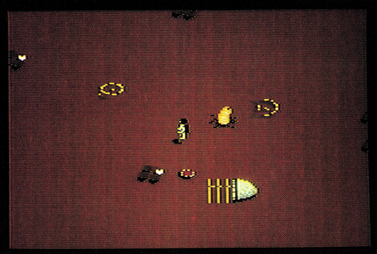
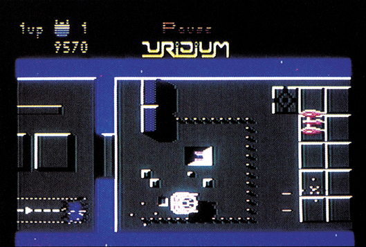

Das Action-Spiel lebt!
Vor einem Jahr war die Software-Branche einhellig der Meinung, keine Action- und Ballerspiele mehr verkaufen zu können. Das war nicht ganz richtig.
Vor drei Monaten schrieben wir in unserem Spieleteil unter der Überschrift »Action aus England«, daß das Action-Spiel nicht tot ist, sondern gerade eine Wiedergeburt erlebt. In England erreichten vor kurzem zwei neue Action-Spiele Spitzenplätze in den Software-Charts.
Das noch relativ kleine englische Software-Haus Durell Software erschütterte vor einigen Monaten die Sinclair-Spectrum-Welt mit »Critical Mass«, einem anspruchsvollen Action-Spiel. Alles wartete nun auf die Commodore 64-Version, die dann nochmals um einige Klassen besser wurde.

Die simple Handlung ist schnell erzählt: Die bösen Außerirdischen haben auf einem Asteroiden ein Kraftwerk gekapert und zur Bombe umfunktioniert. Bei der Explosion in zwölf Minuten wird ein schwarzes Loch entstehen, welches das gesamte Sonnensystem und einige Nachbarn verschlingen wird. In der Nähe befindet sich nur ein kleines Luftkissen-Fahrzeug, das sich durch den feindlichen Verteidigungswall durchschlagen und die Kraftwerks-Bombe entschärfen muß.
Dieser Verteidigungswall gliedert sich in acht Zonen unterschiedlichen Schwierigkeitsgrades. Das zu findende Kraftwerk befindet sich in östlicher Richtung. Der Weg wird von Felsbrocken blockiert, die man elegant umkurven sollte. In jeder Zone trifft man auf höchst gefährliche Gegner. Witzigerweise darf man manche gar nicht abschießen, da man bei deren Explosion wertvolle Schutzschirm-Energie verliert. Da hilft dann nur noch, schnell davonzufahren.
Ein besonderer Gag von »Critical Mass«: Verlieren Sie eines Ihrer Schiffe, müssen Sie sich Ihr Ersatzschiff erst mal im Hangar abholen. Mit einer Mini-Rakete auf dem Rücken fliegen Sie über die Oberfläche des Planeten zu einem der Landepunkte. Dabei werden Sie nicht von den außerirdischen Gegnern sondern von den heimischen Sandwürmen verfolgt. Diese Spezial-Einlage macht das ohnehin sehr schwere Spiel noch komplizierter.
Grafisch ist auf dem Bildschirm einiges los, weil mit sehr schnellem Scrolling gearbeitet wird. Das Spiel lebt von dieser schnellen Bewegung und hat keine Pause-Funktion, was uns beim Bildschirmfoto Schwierigkeiten bereitete. Der Sound ist dafür recht lahm.
Mit »Paradroid« landete Programmierer Andrew Braybrook vor wenigen Wochen einen Hit. Sein neuestes Werk, »Uridium« genannt, ist mindestens genauso gut gelungen.

Die bösen Außerirdischen wollen hier das Sonnensystem um seine Metallvorräte erleichtern. Zu diesem Zweck haben sie 15 große Minen-Schiffe (»Super-Dreadnoughts«) in eine Umlaufbahn gebracht. Ihre Aufgabe: Zerstören Sie die Schiffe, indem Sie deren Selbstvernichtungsmechanismus auslösen.
»Uridium« erinnert an den Klassiker »Defender«. Auf der Oberfläche des Dreadnoughts wird vertikal gescrollt, Gegner kommen von links und rechts. Ihr Manta-Fighter fliegt relativ knapp über der Oberfläche und kann an höheren Hindernissen zerschellen. Anfangs fliegt man über dem Dreadnought hin und her, um dort kleinere Installationen zu zerstören. Nebenbei darf man sich der umherfliegenden Gegner erwehren. Nach einer Weile erscheint die Meldung »Land now«. Dann sollte man sofort zum rechten Ende des Dreadnoughts fliegen und auf der Landebahn aufsetzen. In einem einfachen Bonus-Spiel setzt man die Selbstzerstörung in Gang und kann dann auf dem Rückweg noch die letzten Installationen abschießen, während der Dreadnought sich auflöst.
Man merkt, daß »Uridium« ein besonders edles Ballerspiel ist. Dafür haben die Autoren einen riesigen Aufwand bei der Grafik getrieben. Das Scrolling ist schnell und absolut fließend, besser kann man es wohl nicht mehr machen. Durch geschickte Farbwahl kommt der 3D-Effekt bei Aufbauten und deren Schatten sehr gut zur Geltung. Der Manta-Fighter ist bei Kurven und Kehrtwenden fantastisch animiert. Die Selbstzerstörung des Dreadnought schließlich gehört zu den faszinierendsten Spezial-Effekten der C 64-Geschichte. Auch die musikalische Untermalung ist gut gelungen.
Das Action-Spiel lebt nicht nur, es ist besser geworden als je zuvor. Beide Spiele, insbesondere »Uridium«, könnte man ohne weiteres in eine Spielhalle stellen. Wer Action mag, wird diese Spiele nicht missen wollen.
(bs)